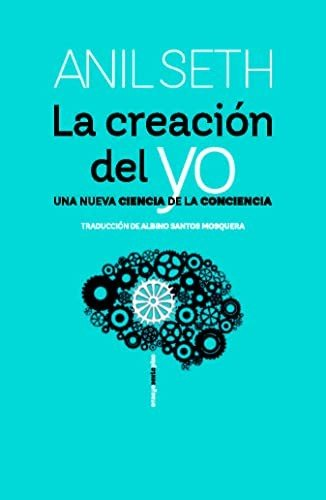
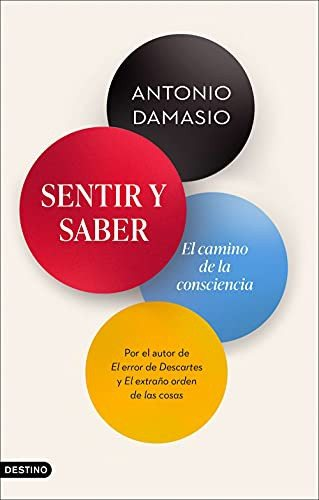
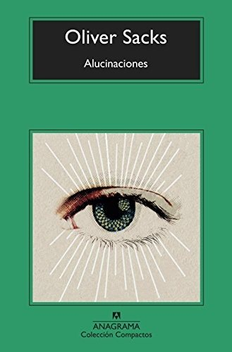
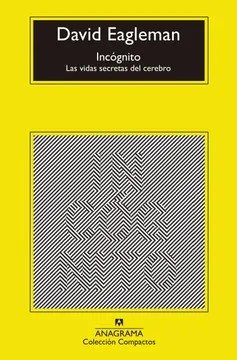
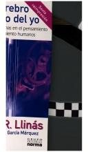

Libros de conciencia y estados mentales
Libros de conciencia y estados mentales en español: 5 libros completos para leer gratis aquí mismo y 7 fichas de títulos actuales.
Psicoanálisis, semiótica y lingüística : una alianza conveniente para el estudio de los sueñosVinocur Fischbein, Susana
Psicoanálisis, semiótica y lingüística : una alianza conveniente para el estudio de los sueñosVinocur Fischbein, SusanaSueños de amor y encuentros decisivos : el poder de la pasión románticaPerson, Ethel Spector
Sueños de amor y encuentros decisivos : el poder de la pasión románticaPerson, Ethel Spector¿Es la satisfacción de deseos la esencia de los sueños? Origen y función de los sueñosRuda, Lourdes
¿Es la satisfacción de deseos la esencia de los sueños? Origen y función de los sueñosRuda, LourdesHipnotismo y sugestion; nociones generales, historia, sintomatología, fisiología, medicina-legal y terapéutica de la hipnosisMaira, Octavio; Benavente, David
Hipnotismo y sugestion; nociones generales, historia, sintomatología, fisiología, medicina-legal y terapéutica de la hipnosisMaira, Octavio; Benavente, DavidLos Oficios de Ciceron, con los dialogos de la Vejez, de la Amistad, las Paradoxas, y el Sueno de Escipion:Cicero, Marcus Tullius
Los Oficios de Ciceron, con los dialogos de la Vejez, de la Amistad, las Paradoxas, y el Sueno de Escipion:Cicero, Marcus TulliusLa creación del yoAnil Seth
La creación del yoAnil Seth
Sentir y saberAntonio Damasio
Sentir y saberAntonio Damasio
AlucinacionesOliver Sacks
AlucinacionesOliver Sacks
La vida secreta de la menteMariano Sigman
La vida secreta de la menteMariano SigmanIncógnitoDavid Eagleman
IncógnitoDavid Eagleman
El cerebro y el mito del yoRodolfo Llinás
El cerebro y el mito del yoRodolfo Llinás
DecididoRobert M. Sapolsky
DecididoRobert M. SapolskyTemas relacionados
¿Estás eligiendo carrera?
Haz gratis el test de orientación vocacional de AURZANE: intereses, aptitudes, autoconcepto y hábitos de estudio, con informe completo.